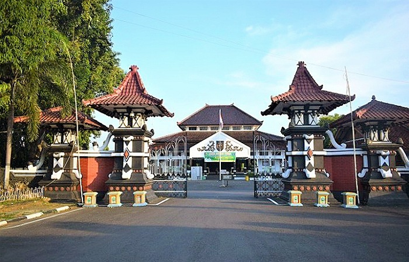
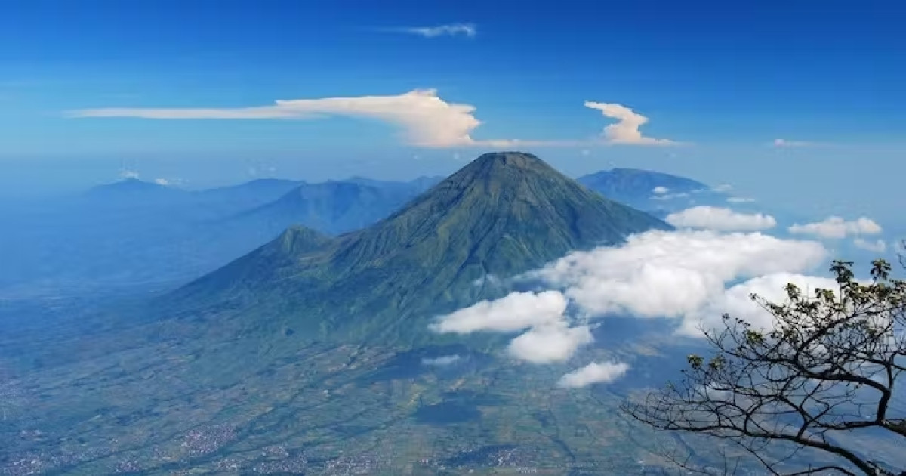
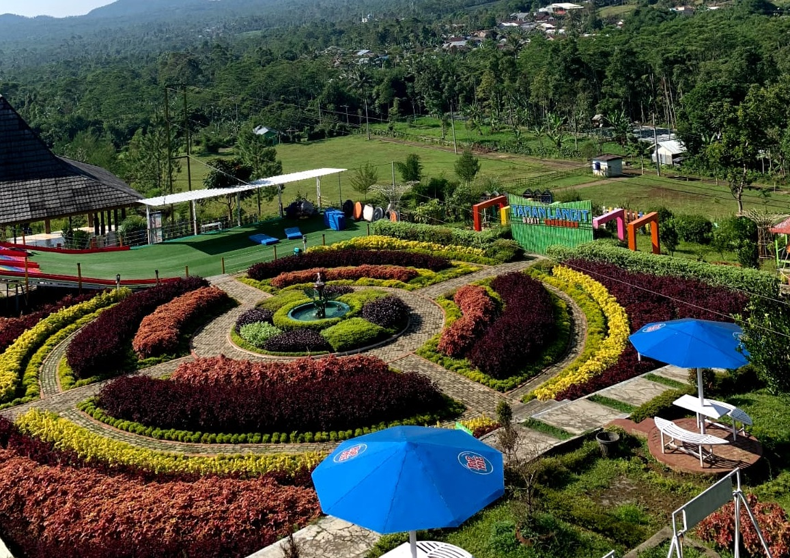
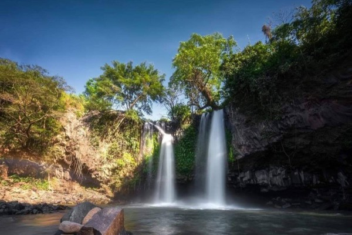
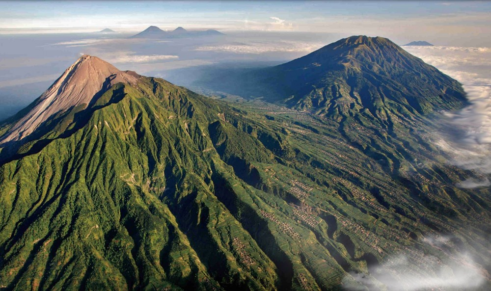

sejarah kota pemalang

Kota Pemalang, sebuah kabupaten di Jawa Tengah, memiliki sejarah yang kaya dan panjang, membentang dari masa prasejarah hingga masa modern. Jejak peradabannya dapat ditelusuri melalui berbagai penemuan arkeologis yang mengindikasikan bahwa wilayah ini telah dihuni sejak zaman dahulu kala.
Pada masa kerajaan-kerajaan Hindu-Buddha, Pemalang diperkirakan pernah menjadi bagian dari wilayah kekuasaan kerajaan-kerajaan besar di Jawa, seperti Kerajaan Mataram Kuno dan Kerajaan Majapahit. Letaknya yang strategis di pesisir utara Jawa menjadikan Pemalang sebagai jalur perdagangan yang penting dan pusat aktivitas maritim.
Pada masa kolonial, Pemalang menjadi salah satu daerah yang penting bagi Belanda dalam menguasai Jawa. Pemalang menjadi pusat administrasi dan perdagangan yang strategis, terutama setelah dibangunnya jalur kereta api yang menghubungkan Pemalang dengan kota-kota besar lainnya di Jawa.
geografis kota Pemalang

Pemalang, sebuah kabupaten di Jawa Tengah, memiliki karakteristik geografis yang unik. Letaknya yang strategis di pesisir utara Pulau Jawa memberikan pengaruh yang signifikan terhadap kondisi alam dan kehidupan masyarakatnya. Sebagian besar wilayah Pemalang merupakan dataran rendah yang subur, cocok untuk pertanian. Namun, di bagian selatan terdapat beberapa daerah perbukitan yang menawarkan keindahan alam. Pemalang juga dilalui oleh beberapa sungai besar yang berperan penting dalam irigasi dan sebagai sumber air bersih. Dengan garis pantai yang cukup panjang, Pemalang memiliki potensi besar dalam sektor perikanan. Iklim tropis dengan dua musim utama, yaitu musim hujan dan musim kemarau, mewarnai kehidupan di Pemalang. Secara geografis, Pemalang sangat menarik karena memadukan keindahan pantai, kesuburan daratan, dan pesona pegunungan.
wisata Pemalang
Pemalag memiliki banyak wisata yang menarik untuk dikunjungi. Berikut beberapa rekomendasi wisata yang wajib kalian datangi saat di Pemalang
bukit tangkeban perahu

Bukit Tangkeban Perahu adalah salah satu destinasi wisata yang menawarkan pemandangan alam yang indah dan menawan. Dari puncak bukit, pengunjung dapat menikmati panorama pegunungan dan hamparan sawah yang hijau. Selain itu, di bukit ini juga terdapat beberapa spot foto yang instagramable, seperti perahu raksasa yang menjadi ikon bukit ini. Bagi yang suka hiking, bukit ini juga menyediakan jalur pendakian yang menantang.
curug bengkawah

Curug Bengkawah adalah air terjun yang terletak di kawasan hutan pinus yang sejuk dan asri. Air terjun ini memiliki ketinggian sekitar 30 meter dan airnya jernih serta segar. Pengunjung dapat berenang atau sekadar bermain air di kolam alami yang terbentuk di bawah air terjun. Di sekitar curug, terdapat area perkemahan yang nyaman dan fasilitas yang lengkap, sehingga cocok untuk berkemah bersama keluarga atau teman.
gunung slamet

Gunung Slamet adalah gunung tertinggi di Jawa Tengah dan merupakan salah satu gunung berapi aktif di Indonesia. Meskipun terkenal dengan jalur pendakian yang cukup sulit, Gunung Slamet menawarkan pemandangan alam yang spektakuler dari puncaknya. Pengunjung dapat menikmati keindahan alam sekitar, serta melihat matahari terbit dan terbenam dari ketinggian. Bagi yang suka petualangan dan tantangan, mendaki Gunung Slamet bisa menjadi pengalaman yang tak terlupakan.